Como tocar
Um passeio pela tela, cartão por cartão. Cada parte tem uma imagem do app tocando, o que ela faz e o que cada controle faz. Os textos são os mesmos do LEARN, dentro do app.
A tela
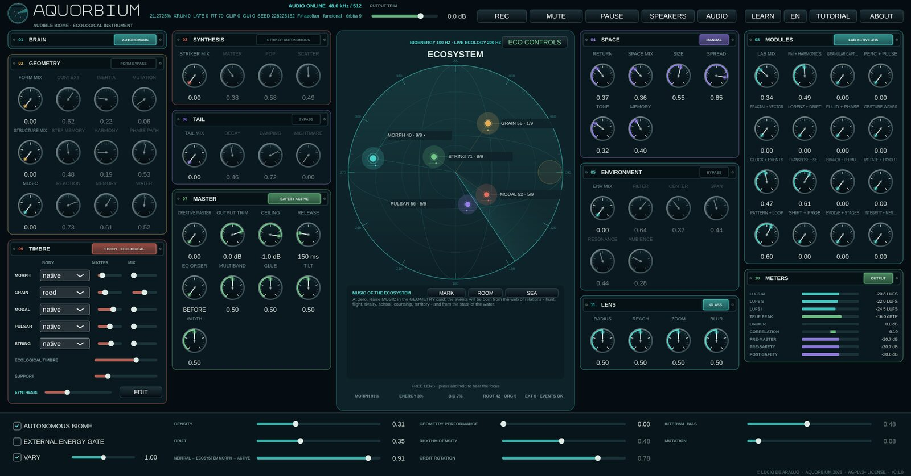
No centro, a esfera de água com os cinco organismos; em volta, os cartões, numerados de 01 a 11; embaixo, a faixa do desejo; em cima, o cabeçalho.
O primeiro controle de cada cartão é a porta: a quantidade daquele módulo na mistura. Em zero, o módulo está desligado e os outros controles ficam cinzas. Suba a porta primeiro, depois mexa nos outros. Tudo é lento de propósito: dê um minuto a cada gesto.
ECOSSISTEMA
O aquário, a teia e a música
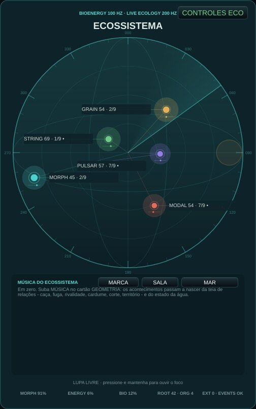
Cinco organismos vivem numa esfera de água: veem, ouvem, caçam, fogem, cortejam e defendem território. As linhas coloridas são a teia de relações; o painel abaixo mostra o estado da água, a tensão, a tonalidade e os últimos acontecimentos. Pressione e mantenha na esfera para mover a lupa e ouvir de perto.
Experimente: Observe uma linha coral (uma caça) engrossar e escute o buzz terminal e a captura; depois, uma cadência.
| COESÃO | O quanto o cardume nada e canta junto. |
|---|---|
| PERIGO | Medo na água: acentos mais fortes, mais ornamentos, mais fugas. |
| FOCO ESPARSO | Modo de escuta: poucos eventos, focados. |
| MEMÓRIA DE ENERGIA | Modo de escuta: a energia lembrada e liberada devagar. |
| CICLO GEOMÉTRICO | Modo de escuta: os ciclos das órbitas conduzem. |
| DERIVA COLETIVA | Modo de escuta: o grupo deriva junto. |
ECOLOGIA
Desejo e geometria
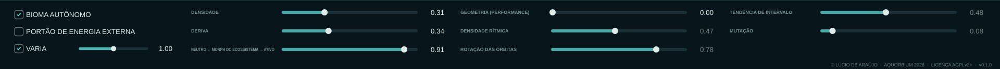
A faixa de baixo reúne o desejo do ecossistema (densidade, deriva, morph) e o sequenciador geométrico das órbitas. O desejo altera tendências, nunca escreve acontecimentos.
Experimente: CONTROLES ECO (no aquário) abre coesão, perigo, os modos de escuta e as cenas.
| DENSIDADE | Quanto acontece: o desejo de densidade do ecossistema. |
|---|---|
| DERIVA | Agitação: à esquerda água calma, à direita inquieta. |
| NEUTRO ← MORPH DO ECOSSISTEMA → ATIVO | De uma mistura neutra à influência espacial e timbral plena do ecossistema. |
| GEOMETRIA (PERFORMANCE) | Zero: geometria autônoma. Aumente para ativar ritmo, rotação, intervalos e mutação; mudanças surgem nos próximos eventos. |
| DENSIDADE RÍTMICA | Quantos passos de cada órbita soam. |
| ROTAÇÃO DAS ÓRBITAS | Gira onde começa o padrão de cada órbita. |
| TENDÊNCIA DE INTERVALO | Inclina os passos melódicos para intervalos menores ou maiores. |
| MUTAÇÃO | Com que frequência as órbitas mudam de forma. |
| BIOMA AUTÔNOMO | O bioma vive e soa sozinho; desligue para tocá-lo só de fora. |
| PORTÃO DE ENERGIA EXTERNA | Notas externas (MIDI, teclado) liberam a energia do bioma. |
| VARIA | VARIA: os controles se movem sozinhos ao longo da música, devagar e em relação, em torno de onde a semente ou a sua mão os deixou - mais quentes e rápidos no clímax da peça, assentando no repouso. O estágio de saída nunca se move. Mexa num controle e ele passa a respirar em torno do seu valor. Desligado: tudo fica onde está. Cada abertura também propõe outro bioma - água, luz, população, corpos, quais módulos acordam; o estado que você deixou fica guardado como opening.previousStateV1 nas preferências. |
CÉREBRO
Incerteza e estado
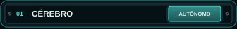
A bioenergia e as decisões internas do bioma: ele não precisa de nota externa para viver. Seu estado alimenta todos os outros cartões.
Experimente: Deixe o bioma sozinho alguns minutos e ouça como ele atravessa o dia e a estação.
| RELÓGIO | CÉREBRO: com que frequência o registrador do Cérebro gira (0,06 a 0,9 Hz). Centro = como antes. |
|---|---|
| COORDENAÇÃO | CÉREBRO: quanto os organismos compartilham uma inclinação - em 0 cada um a sua, em 1 um cardume. Zero = como antes. |
GEOMETRIA
Forma, estrutura e música ecológica
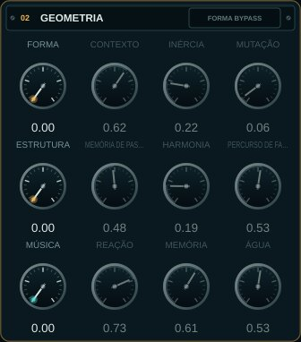
Três camadas de composição: FORMA (uma memória de Markov das seções), ESTRUTURA (memória de passos e harmonia) e a MÚSICA do ecossistema, em que os acontecimentos nascem da teia de relações entre os organismos e do estado da água.
Experimente: Suba MÚSICA até 1 e mova ÁGUA devagar para a esquerda: ouça a música congelar em cristal; depois para a direita, até a turbulência e a fervura.
| FORMA | Zero: memória formal transparente. Aumente para deslocar seção e contorno nos próximos eventos coletivos. |
|---|---|
| CONTEXTO | Quanto o estado ecológico atrai a próxima região formal. |
| INÉRCIA | Tendência de permanecer na região formal atual. |
| MUTAÇÃO | Probabilidade distribuída de saltos entre regiões formais. |
| ESTRUTURA | Zero: caminho anterior intacto. Aumente para ativar memória de passos e progressão. |
| MEMÓRIA DE PASSOS | Contribuição da memória endereçável para altura e duração dos eventos. |
| HARMONIA | Contribuição dos acordes ponderados para o campo de alturas. |
| PERCURSO DE FASE | Percurso ecológico: dia à esquerda, estação à direita. |
| MÚSICA | Zero: rota anterior intacta. Aumente para que a música venha do ecossistema: caça, fuga, corte, território, a teia de relações. |
| REAÇÃO | O quanto os organismos reagem ao que veem e ouvem através da água. |
| MEMÓRIA | Esquerda: os cantos se repetem (identidade). Direita: transformam-se e se copiam entre aliados. |
| ÁGUA | Centro: a água segue a estação. Esquerda esfria até o gelo; direita aquece até a fervura. A mudança de estado leva o tempo do calor latente. |
TIMBRE
Corpos dos organismos
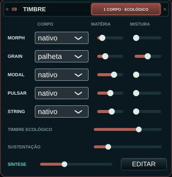
Cada organismo pode cantar com um segundo corpo - voz, matéria, sopro, corda, gota, dobra, membrana, vidro, coro, arco ou palheta - misturado ao corpo nativo. O TIMBRE ECOLÓGICO deixa a água, a caça, a fuga, a corte, o vigor e a saúde transformá-los. Embaixo, SÍNTESE e EDITAR abrem o dispositivo de síntese: uma voz por organismo que você constrói, tocada pelo ecossistema.
Experimente: Dê a voz ao MORPH e a gota ao PULSAR, suba a MISTURA e depois o TIMBRE ECOLÓGICO: quando o caçador persegue, a voz aguça; quando a água ferve, as gotas engrossam.
| CORPO | O segundo corpo deste organismo: voz (canto formante), matéria (modos harmônicos → membrana), sopro, corda, gota d'água, dobra, membrana (tambor d'água → pele), vidro friccionado, coro, arco (corda friccionada) ou palheta (o tubo de um clarinete). |
|---|---|
| MATÉRIA | MATÉRIA: o caráter dentro do corpo (as vogais da voz e do coro; harmônico → membrana; o ar do sopro; dedilhada → friccionada; gota → chuva; a dobra; tambor solto → pele esticada; o brilho e o batimento do vidro; o arco de sul tasto a sul ponticello; a embocadura da palheta, escura a brilhante). |
| MISTURA | MISTURA: quanto do segundo corpo soa junto ao corpo nativo. |
| TIMBRE ECOLÓGICO | TIMBRE ECOLÓGICO: o quanto a vida do ecossistema transforma a matéria e a presença dos corpos (a água, a caça, a fuga, a corte, o vigor, a saúde). |
| SUSTENTAÇÃO | SUSTENTAÇÃO: o nível dos três organismos de sustentação - GRAIN, MODAL, STRING - diante de MORPH e PULSAR, de -6 a +24 dB. Eles ficam uns 22-26 dB abaixo do primeiro plano; suba para trazê-los à frente. 0 dB no início. |
O dispositivo de síntese
Uma voz que você constrói, para cada organismo
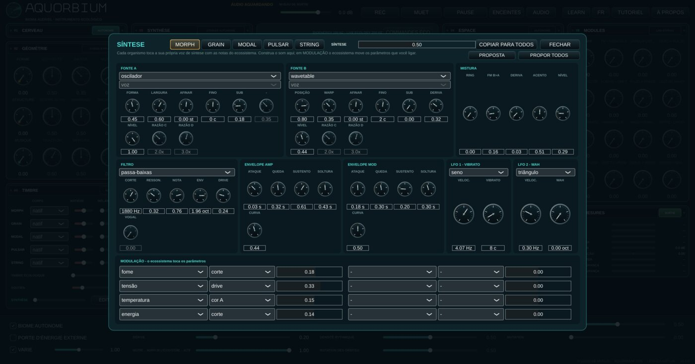
TIMBRE → EDITAR abre um sintetizador por organismo: duas fontes (oscilador, ruído, FM, wavetable, aditiva, pulsar, corda, matéria, caos, realimentação ou um dos corpos), RING e FM entre elas, um filtro, dois envelopes e dois LFOs. O ecossistema toca as notas; na MODULAÇÃO, a vida do bioma - fome, tensão, distância, a temperatura da água - move os parâmetros que você liga.
Experimente: PROPOR TODOS, e SÍNTESE pela metade; depois mude uma via de cada vez e escute o que o ecossistema faz com ela. O tutorial tem cinco lições sobre o dispositivo.
| PROPOSTA | PROPOSTA: um patch de partida para este organismo, tirado da espécie (fontes, gesto, registro) e da estratégia ecológica (o que chega à matriz), e nivelado com os outros. Cada clique tira outro; o primeiro da sessão segue a semente. Edite a partir dele. |
|---|---|
| MISTURA | SÍNTESE: quanto da voz de síntese de cada organismo soa no lugar do seu próprio corpo. Em zero o instrumento soa exatamente como antes. |
SÍNTESE
Vozes orgânicas
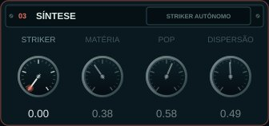
O Striker granular: impactos feitos de partículas, da poeira ao metal ressonante.
Experimente: Suba STRIKER e mova MATÉRIA e DISPERSÃO enquanto o bioma toca.
| STRIKER | Zero: Striker autônomo. Aumente para ativar MATÉRIA, POP e DISPERSÃO; respondem nos próximos impactos. |
|---|---|
| MATÉRIA | Da poeira breve ao metal ressonante. |
| POP | Quantidade de partículas por impacto. |
| DISPERSÃO | Dispersão temporal e espectral. |
ESPAÇO
Perspectiva e memória
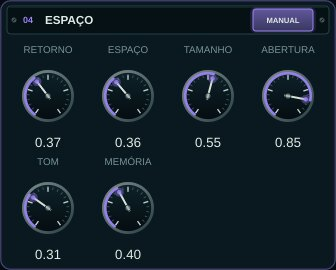
O espaço compartilhado onde os sons dos organismos refletem: primeiras reflexões cujo tamanho, abertura e tom seguem o aquário.
Experimente: Suba ESPAÇO e TAMANHO para uma grande sala de água; baixe TOM para um espaço mais fundo e escuro.
| RETORNO | Quantidade audível do espaço compartilhado. |
|---|---|
| ESPAÇO | Zero: Espaço autônomo. Aumente para ativar TAMANHO, ABERTURA, TOM e MEMÓRIA. RETORNO funciona independentemente. |
| TAMANHO | Escala temporal das reflexões. |
| ABERTURA | Abertura lateral das reflexões. |
| TOM | Abertura espectral das reflexões. |
| MEMÓRIA | Persistência do campo de reflexões. |
AMBIENTE
Assinatura e leito
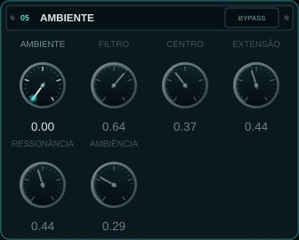
Uma assinatura espectral de oito bandas do bioma e um leito de ruído guiado pela estação, pela água e pela integridade do vidro.
Experimente: Suba um pouco AMBIENTE e AMBIÊNCIA: o aquário ganha um ar próprio.
| AMBIENTE | Zero: bypass transparente. Aumente para ativar filtro e atmosfera. |
|---|---|
| FILTRO | Mistura seca da assinatura espectral de oito bandas. |
| CENTRO | Centro logarítmico do banco espectral. |
| EXTENSÃO | Extensão em oitavas das oito bandas. |
| RESSONÂNCIA | Seletividade das bandas espectrais. |
| AMBIÊNCIA | Leito de ruído guiado por estação, água e integridade. |
CAUDA
Persistência sintética
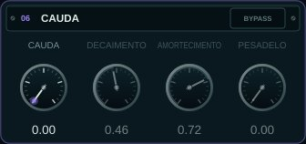
Uma reverberação tardia e difusa depois das primeiras reflexões.
Experimente: Com PESADELO a cauda se torce sobre si: use com parcimônia, como um acontecimento.
| CAUDA | Zero: bypass transparente. Aumente para ouvir a cauda tardia. |
|---|---|
| DECAIMENTO | Duração da persistência sintética. |
| AMORTECIMENTO | Absorção progressiva das frequências altas. |
| PESADELO | Torção da matriz de realimentação. |
MASTER
Saída e integridade
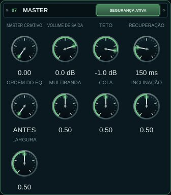
O nível final, o limitador de segurança e um master criativo opcional (dinâmica multibanda, largura, cola).
Experimente: VOLUME DE SAÍDA é o volume. SILENCIAR e PAUSA estão no cabeçalho.
| MASTER CRIATIVO | Macro de crossover, dinâmica multibanda, largura e cola óptica. Zero é bypass exato. |
|---|---|
| VOLUME DE SAÍDA | Nível técnico final: -18 dB a +6 dB; 0,75 corresponde a 0 dB. |
| TETO | Teto do limitador: -6 dB a -0,1 dB; inicial em -1 dB. |
| RECUPERAÇÃO | Recuperação do limitador: 50 ms a 500 ms; inicial em 150 ms. |
| ORDEM DO EQ | Onde fica o EQ de inclinação do MASTER CRIATIVO: ANTES da dinâmica multibanda (a dinâmica reage ao som já inclinado) ou DEPOIS dela (a inclinação colore o que a dinâmica deixou). Só age com o MASTER CRIATIVO acima de zero. |
| MULTIBANDA | MASTER CRIATIVO: a dinâmica multibanda, menos ou mais do que a ecologia define. Centro = só a ecologia. |
| COLA | MASTER CRIATIVO: a cola lenta, menos ou mais. Centro = só a ecologia. |
| INCLINAÇÃO | MASTER CRIATIVO: mais escuro (esquerda) ou mais claro (direita) do que a luz do dia define. Centro = só a ecologia. |
| LARGURA | MASTER CRIATIVO: mais estreito ou mais largo do que a coesão define (o grave fica mono). Centro = só a ecologia. |
MÓDULOS
Banco integrado
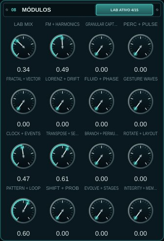
Todos os protótipos codificados, reunidos em quinze famílias tocáveis: um laboratório. LAB MIX em zero mantém o instrumento exatamente como está.
Experimente: Suba LAB MIX e depois uma família por vez, ouvindo o que cada uma acrescenta.
| LAB MIX | Bypass mestre do banco: zero preserva exatamente o instrumento anterior |
|---|---|
| FM + HARMONICS | FM, harmônicos, BiomaBass, cardume, vocoder e contágio |
| GRANULAR CAPTURE | Granular, isolador, resíntese recente e foco lock-in |
| PERC + PULSE | Percussão, máscara estocástica e HarmonicRippleVoice |
| FRACTAL + VECTOR | Fractal, vetor, polígono X/Y e FrequencyShifter |
| LORENZ + DRIFT | Lorenz, derivas e autorrealimentação limitada |
| FLUID + PHASE | Movimento, quadratura, inércia e binaural leve |
| GESTURE WAVES | MotionGestureRecorder e banco de ondas de movimento |
| CLOCK + EVENTS | Relógio, eventos, ressonadores e L-system |
| TRANSPOSE + SELECT | AccumulatingTransposer e ThresholdStepSelector |
| BRANCH + PERMUTE | Ramificação, limiares reativos, matriz e Spotlight |
| ROTATE + LAYOUT | Rotação, layout e pools compartilhados/reconfiguráveis |
| PATTERN + LOOP | Bancos, RandomToLoop e autômato celular |
| SHIFT + PROB | ShiftRegisterMemory e ProbabilityDistribution |
| EVOLVE + STAGES | Evolução, realimentação cruzada, limiares e cenas comportamentais |
| INTEGRITY + MEMORY | Integridade, memória, fome e barramento sem entrada |
Lupa
A lupa no vidro
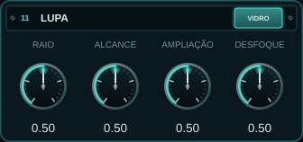
Pressione e mantenha sobre a esfera para encostar a lupa no vidro e ouvir de perto os seres que passam ali; o resto fica fora de foco. Os quatro botões dão a forma da lupa.
Experimente: Siga um organismo com a lupa enquanto ele atravessa a esfera.
| RAIO | LUPA: o tamanho do ponto em foco no vidro. Centro = como antes. |
|---|---|
| ALCANCE | LUPA: quão fundo na água a lupa alcança a partir do vidro. Centro = como antes. |
| AMPLIAÇÃO | LUPA: quanto os organismos em foco vêm à frente. Centro = como antes. |
| DESFOQUE | LUPA: quanto os organismos fora de foco recuam. Centro = como antes. |
Medidores
A saída, medida
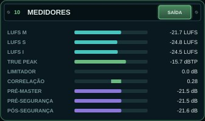
Loudness (LUFS momentâneo, curto e integrado), o true peak, a redução do limitador de segurança, a correlação estéreo e as três tomadas que o ecossistema pode ouvir: antes do MASTER CRIATIVO, antes do limitador e depois dele.
O cabeçalho
Gravar, silenciar, ouvir e aprender
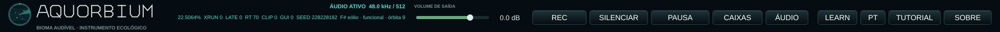
O volume de saída, o REC, SILENCIAR e PAUSA, CAIXAS ou FONES, a escolha do ÁUDIO, o LEARN, o idioma, o TUTORIAL e o SOBRE. A linha de status mostra o mundo da sessão e a semente.
Experimente: Ligue o LEARN e passe o mouse sobre qualquer controle.
| REC | Grava o que você ouve (depois do MASTER e do SILENCIAR) num WAV float de 32 bits em Música/Aquorbium/<data>/, com um texto ao lado: a semente da sessão e os controles. Até uma hora. |
|---|---|
| SILENCIAR | Fecha o som com uma rampa curta; o ecossistema continua vivendo. |
| PAUSA | Silencia e congela o tempo do ecossistema; CONTINUAR retoma de onde parou. |
| CAIXAS / FONES | CAIXAS: a mistura estéreo. FONES: cada organismo ouvido de onde está na esfera - esquerda e direita, frente e trás, acima e abaixo - através de uma cabeça (o modelo binaural de Brown & Duda: a sombra da cabeça, o atraso entre as orelhas, a orelha externa). Use só com fones. |
| ÁUDIO | Selecionar saída, taxa e buffer. Para diagnosticar estalos, tente 48 kHz / 512 amostras. |
| LEARN | LEARN ligado: aponte para qualquer controle ou cartão e a explicação aparece embaixo |
| TUTORIAL | Uma visita guiada ao instrumento, capítulo a capítulo |
| SOBRE | O que é o Aquorbium, seus conceitos, créditos e licença |